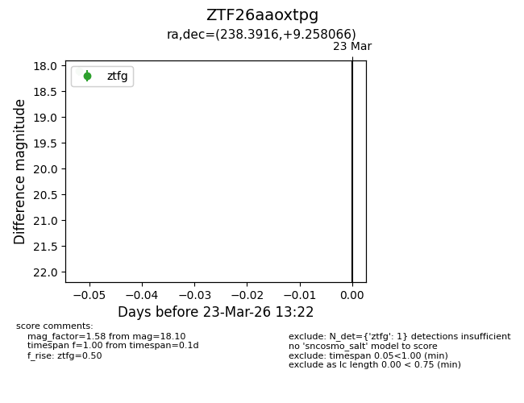
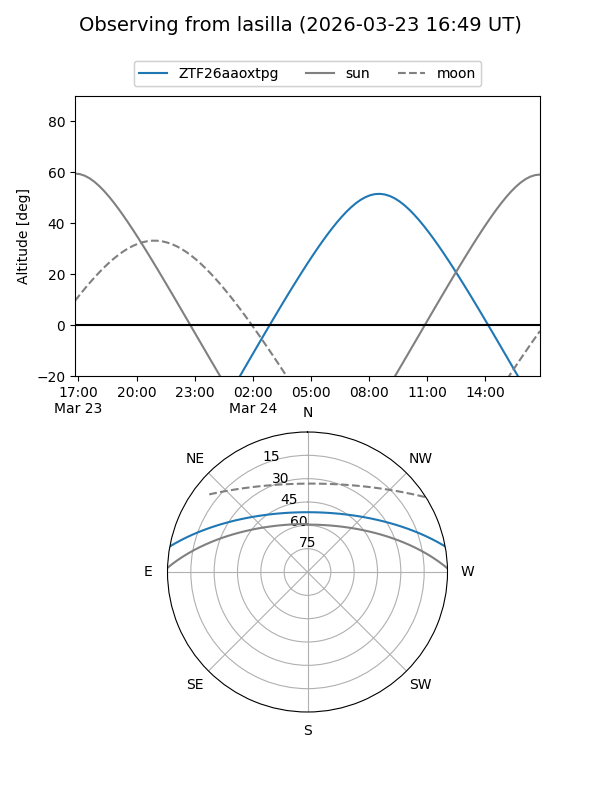
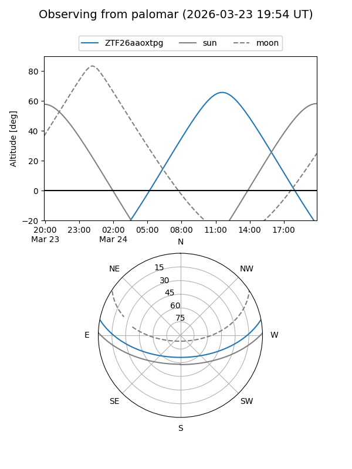

ZTF26aaoxtpg
Target ZTF26aaoxtpg at 2026-03-23 13:24
Aliases and brokers:
FINK: link
Lasair: link
ALeRCE: link
alt names
ZTF26aaoxtpg (ztf,fink_ztf)
Coordinates:
equatorial (ra, dec) = 238.3916,+9.25807
equatorial (HMS+DMS) = 15:53:33.98,+09:15:29.04
galactic (l, b) = (19.2030,+43.52598)
Flags:
Photometry:
last ztfg=18.10
1 ztfg detections
Lightcurve

Visibility


Additional plots